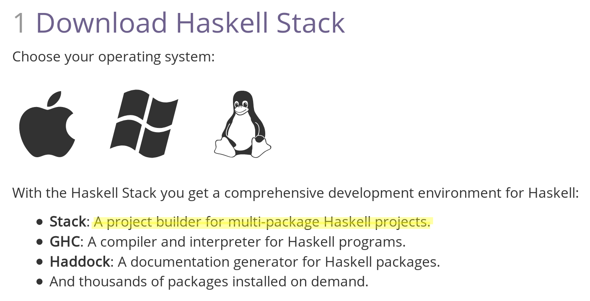

Haskell s01e01
Primeiro Avanço
Porquê Haskell?
Porque é funcional e funcional é fixe!
Porque queremos ler o código do PostgREST 🙂
Porque nos obriga a «sair» do paradigma imperativo...
The Hard Way!
Haskell, para além de estritamente funcional...
...obriga-nos a pensar em matematiquês...
λ-
calculus:
T=λxy.x; F=λxy.y
Type theory: proofs as programs
Algebra: monoids, semigroups...
Category theory: Functors, cata-morphism, hylo...
Ok... Não é 🙈 estritamente 🙉 necessário 🙊 começar por aqui...
Para já (...🙂) fica tudo em fila-de-espera!
Depois, Haskel traz-nos novas ferramentas:
Pattern Matching
Tuples
Maybes
ok, ok... Elm...
Functors
Applicatives
Alternatives
Monoids
Foldables
Traversables
Point-free 🥋 programming
Monads!
Fundamentos? Tipos/Classes base? Sintaxe? Exercism?
Vamos começar pelo REPL do Haskell: o GHCi
$ stack repl
$ stack ghci
$ stack exec -- ghci

Configuração
~/.ghci
:set prompt "\x03BB> "
:set prompt-cont "?| "
:set editor vi
Commandos: GHCi
:quit 🙂, Ctrl-D
:
:help, :?
:browse
:type
:info
:{ ... :}
:add :cd :cmd :complete :ctags
:def :edit :etags :module :issafe
:kind :load :main :undef :reload
:run :script :unadd :!
A maior parte dos comandos podem ser abreviados pela primeira letra!
Commandos para depuração:
:abandon :back :break
:continue :delete :force
:forward :history :list
:print :sprint :step
:steplocal :stepmodule
:trace
Commandos para definições:
:set :seti
:set args
:set prog
:set prompt
:set prompt-cont
:set prompt-function
:set prompt-cont-function
:set editor
:set stop
:unset
Tipicamente usadas no ~/.ghci
Commandos de visualização de informação:
:show bindings :show breaks
:show context :show imports
:show linker :show modules
:show packages :show paths
:show language :show targets
:show <setting> :showi language
GHCi: prelúdio e comandos
Prelude
- Prelude é uma biblioteca de funções standard
- Está incluído na base package do Haskell
- Pode ser desativado
- Existem Preludes "alternativos"
Prelude
$ stack repl
$ stack ghci --ghci-options \
-XNoImplicitPrelude
$ stack exec -- ghci \
-XNoImplicitPrelude
Comandos
- :browse – com/sem Prelude
- :info – informação sobre simbolos
- :type – informação sobre expressões
- :edit – acesso ao editor configurado
- :(re)load – carrega um módulo (sair com :m)
- :{ ... :} – multilinha
Ver também: Using GHCi
Hello, Haskell!
main :: IO ()
main = putStrLn "Hello, Haskell!"
Exercícios:
- double
- double (point-free)
- haskell (channel λ)
- reverse
- ...
Próximos passos:
Sugestões?
Sugestões:
- Syntaxe – Funções/Módulos
- Tipos – e Classes (Eq, Ord, ...)
- Strings – exercícios
- Listas – exercícios
- Prelude – O que vem incluído?
- ...
Referências:
- https://www.haskell.org/documentation
- https://www.haskell-lang.org/documentation
- https://haskellstack.org/
- Haskell 2010 – Language Report
- Programming in Haskel – Hutton
- Haskell Programming – Allen, Moronuki (typeclasses.com)